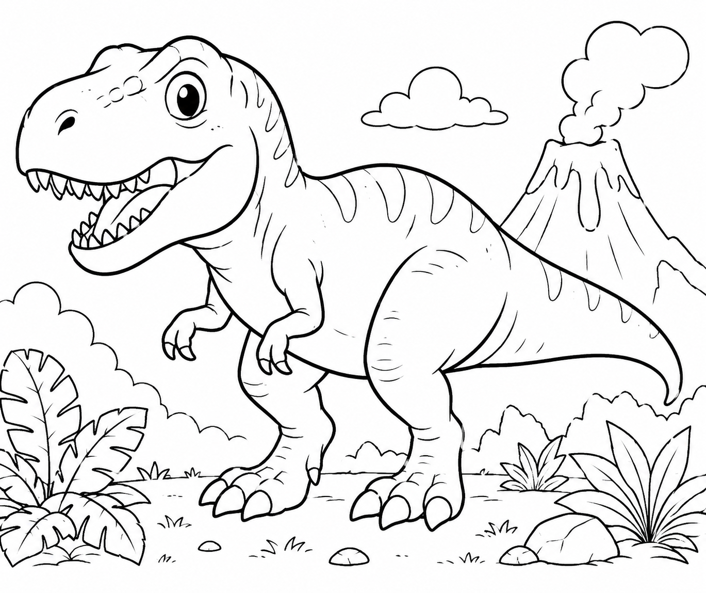
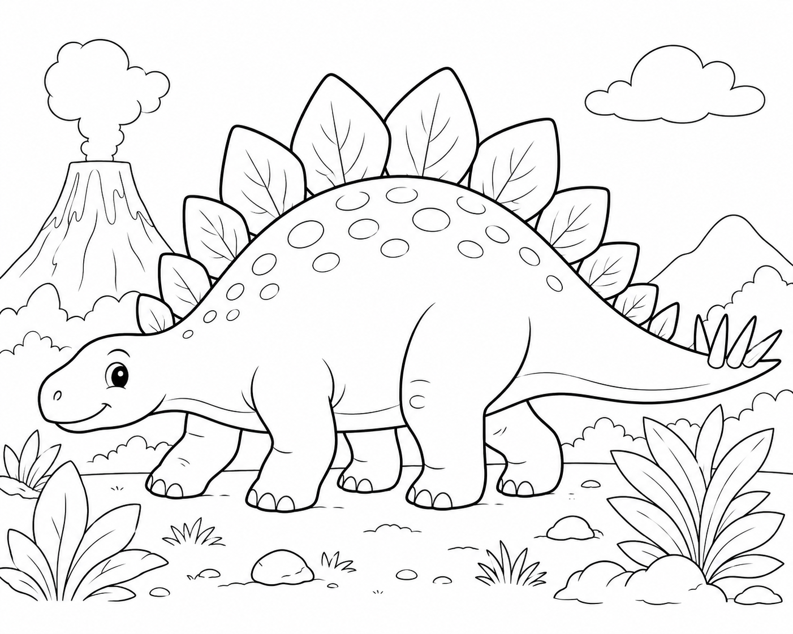
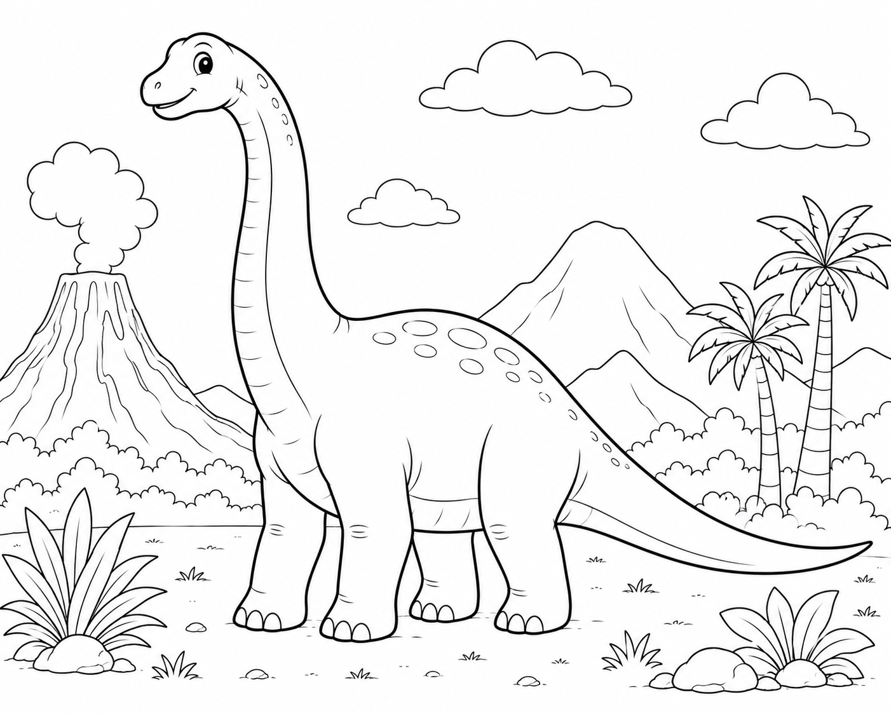
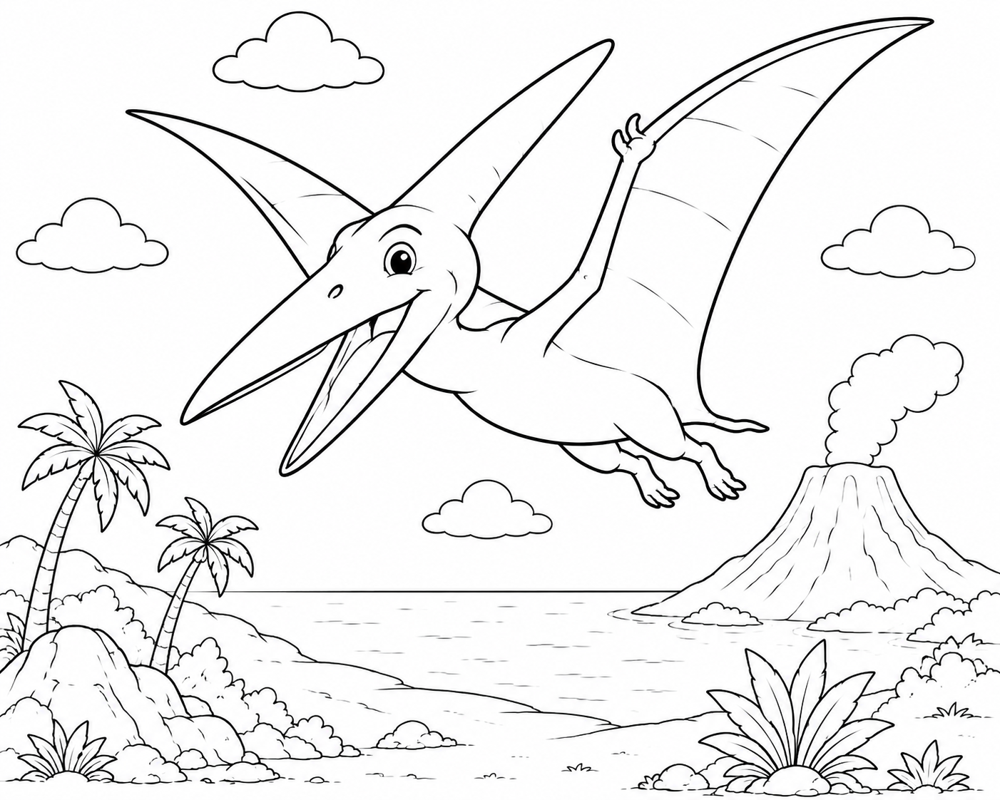
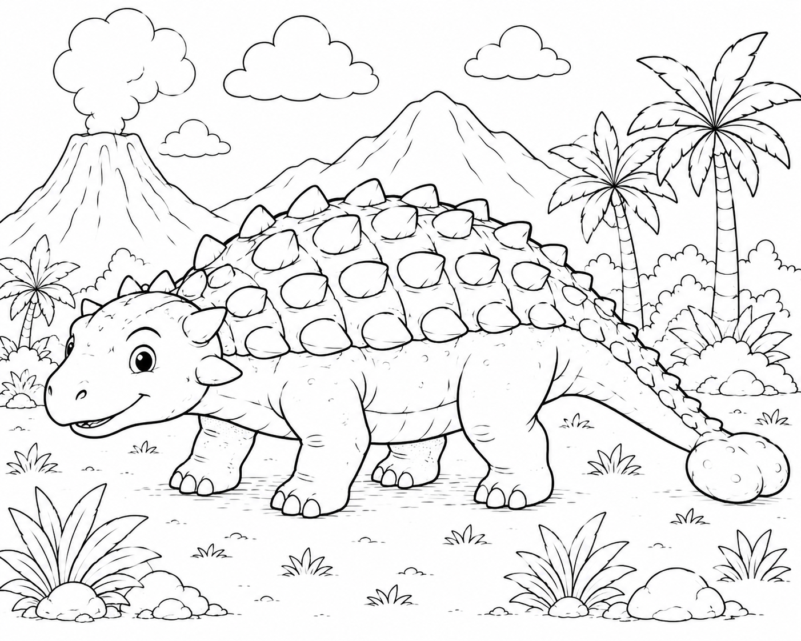
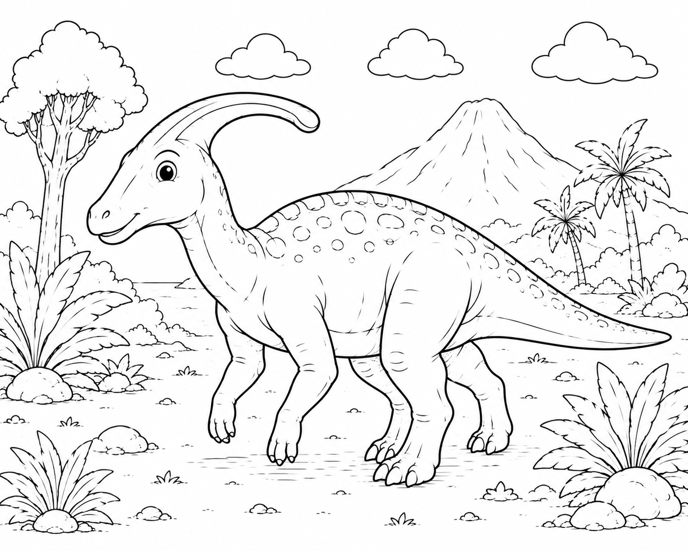
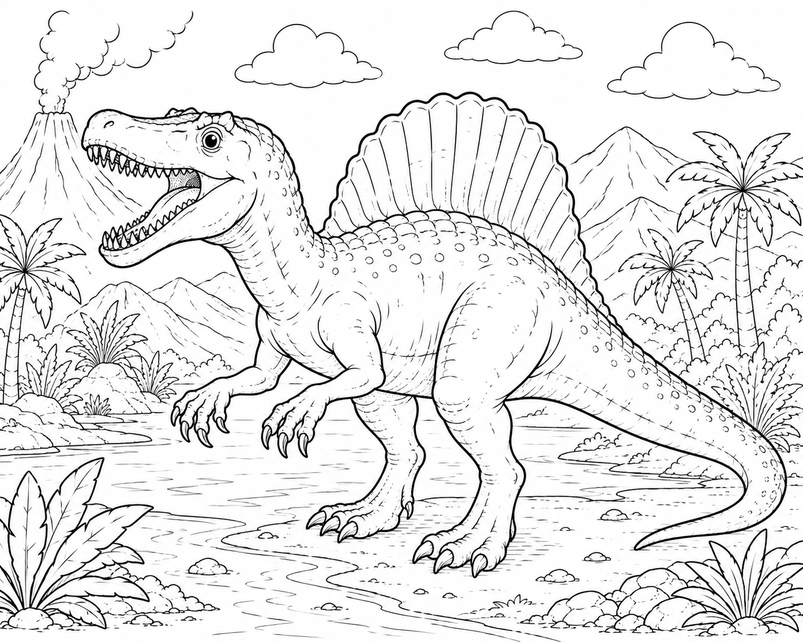
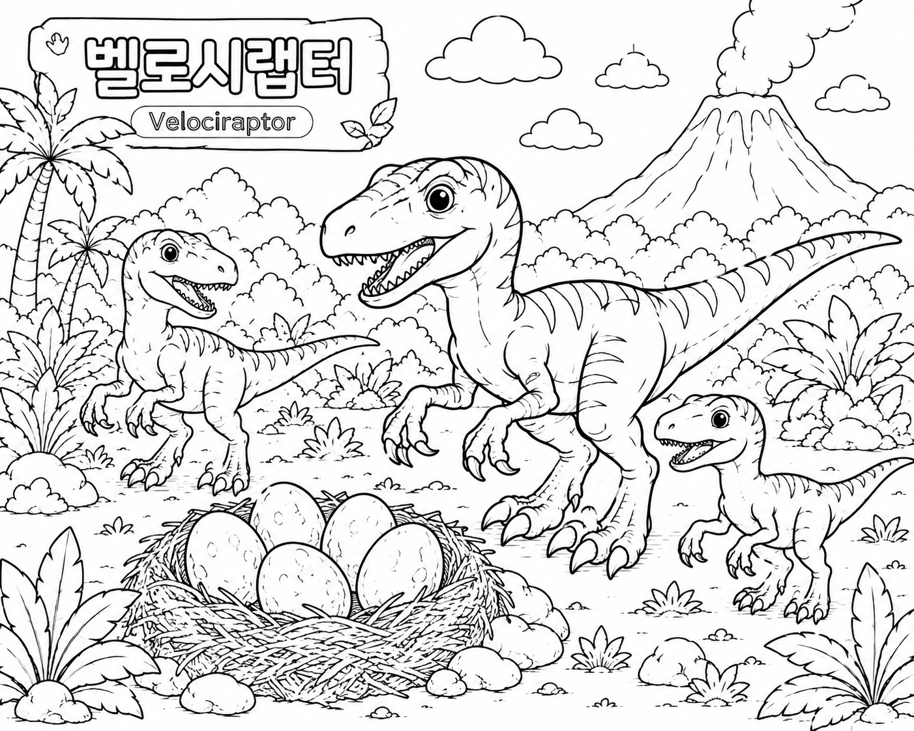

← 홈으로
🦖 공룡 색칠공부 모음
아이들이 좋아하는 공룡 색칠공부 도안을 무료로 출력해보세요.

티라노사우루스
가장 인기 있는 육식 공룡
보러가기

트리케라톱스
세 개의 뿔을 가진 초식 공룡
보러가기

스테고사우루스
등판이 특징인 인기 공룡
보러가기

브라키오사우루스
목이 긴 거대 공룡
보러가기

프테라노돈
하늘을 나는 익룡
보러가기

안킬로사우루스
갑옷 같은 등과 꼬리 곤봉이 특징인 공룡
보러가기

파라사우롤로푸스
머리 뒤 긴 볏이 특징인 초식 공룡
보러가기

스피노사우루스
등의 큰 돛이 특징인 육식 공룡
보러가기

벨로시랩터
빠르고 날렵한 공룡
보러가기

모사사우루스
바다의 제왕으로 불리는 해양 파충류
보러가기